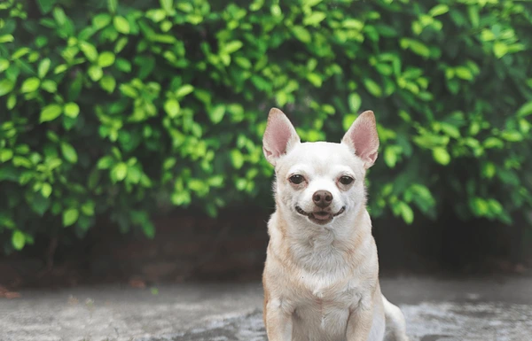

Presentación

El Chihuahua es perro pequeño y tiene el pelaje largo y liso o ligeramente ondulado, en colores que van del beis al negro. Las orejas le cuelgan a causa del pelo, alrededor del cuello tiene una gorguera y las patas suelen tener mucho fleco. Un adulto compacto y delicado suele medir entre 15 y 23 cm y pesar de 1,8 a 2,7 kg.
Personalidad
El chihuahua de pelo largo tiende a crear un estrecho vínculo con una o dos personas, con quienes será curioso, vivaracho e inteligente, además de constantemente afectuoso. Sin embargo, sin una socialización temprana, no es una raza que acepte bien a los desconocidos y puede parecer nervioso, ladrador y ruidoso. Los chihuahuas deben socializarse lo antes posible o se volverán muy nerviosos en entornos nuevos y no se llevarán bien con niños, extraños u otras mascotas de casa. Son una raza exclusivista y les gusta estar con otros chihuahuas.
Origen
Hay quien cree que el chihuahua es producto del cruce del techichi con un perro más pequeño aún y sin pelo procedente de Asia. Chihuahua es un estado de México desde donde se exportó el chihuahua moderno por primera vez a Estados Unidos. Según la teoría, esta raza evolucionó de las antiguas variedades del techichi, mezcladas con perros pequeños de México, Arizona y Texas.
Salud
Los problemas de salud más comunes de esta raza de perro son el resultado de una cría extrema. Como ocurre con muchas razas pequeñas, el chihuahua puede padecer desplazamientos temporales de la rótula (luxaciones de rótula) y problemas de tráquea. La forma de la cabeza hace que tiendan a sufrir hidrocefalias (agua en el cerebro) y ciertos trastornos oculares.
Infórmese con suficiente antelación sobre la cría y sus efectos en la salud del amigo de cuatro patas. No apoye a los criadores que promueven rasgos de cría extremos conocidos.
Aseo
Esta raza no necesita un aseo excesivo. El chihuahua de pelo largo necesita un buen cepillado y peinado una vez a la semana. De vez en cuando hay que lavarle el pelo largo de la gorguera, ya que atrapa los restos de comida. Los chihuahuas sí que mudan, pero como es una raza pequeña, no tienen demasiado pelo que perder. Se aconseja cepillarles los dientes a diario, ya que, como sucede con muchas razas pequeñas, tienden a tener sarro.
Nutricion
Los perros de compañía tienen un metabolismo rápido, lo que significa que queman energía a un ritmo muy alto. Esto supone que, con un estómago tan pequeño, deben comer poco pero a menudo. Los alimentos para razas pequeñas están específicamente ideados con proporciones adecuadas de nutrientes clave y unos granos de pienso de menor tamaño que se adapten a bocas más pequeñas. Esto, además, estimula la masticación y mejora la digestión.